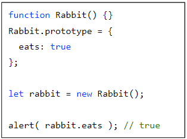
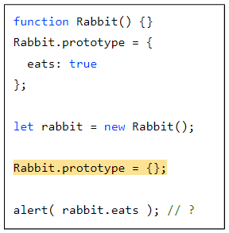
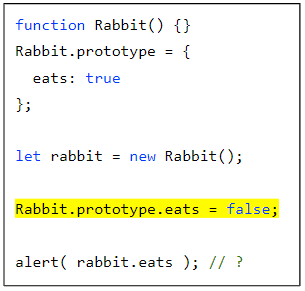
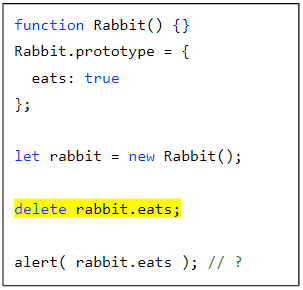
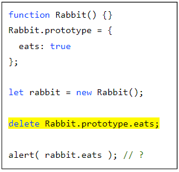
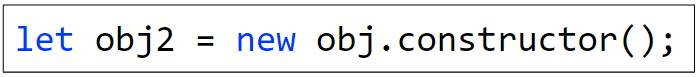

แบบฝึกหัด
จากโค๊ดต่อไปนี้มีการสร้าง new Rabbit() ขึ้นมา

ถ้ามีการ alert ในบรรทัดดังกล่าวจะได้อะไรออกมา

true
ถ้ามีการเปลี่ยนบรรทัดสีเหลืองจะเป็นอย่างไร

false
ถ้ามีการเปลี่ยนบรรทัดสีเหลืองจะเป็นอย่างไร

true
ถ้ามีการเปลี่ยนบรรทัดสีเหลืองจะเป็นอย่างไร

undefined
ถ้าเราต้องการสร้างใช้ constructor ของ obj เราสามารถเขียนแบบนี้ได้ไหม

ทำได้ (อย่าลืม constructor)